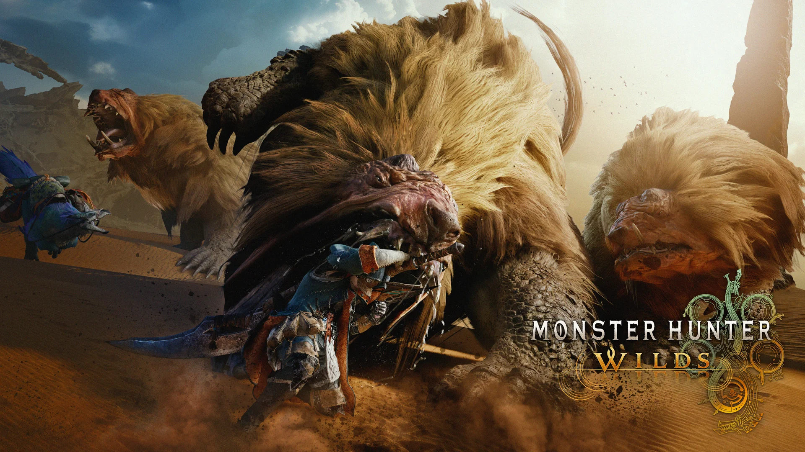
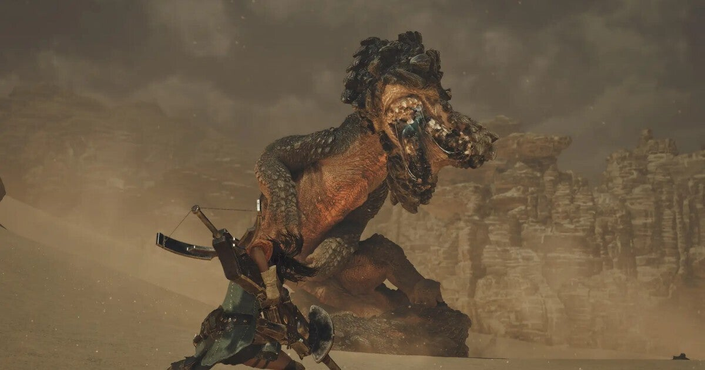
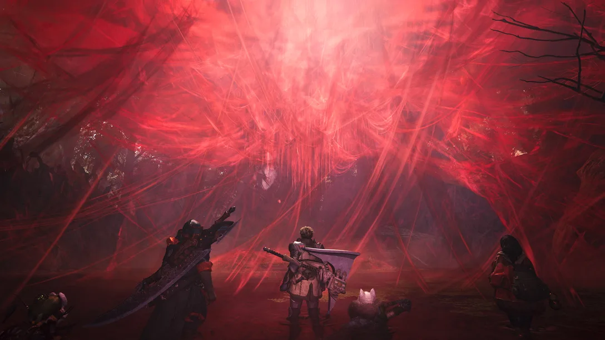

モンスターハンターワイルズpv
現段階で世に出ているモンスターハンターワイルズのpvを紹介します
下の画像を押すとpvに飛びます

モンスターハンターワイルズの最初に出たpvになります、ゲーム内の映像が始めて出たタイミングでもあります
今もまだ多くのことはわかってはいませんがこの映像に出てくる物は新しいものばかりです
このpvでは何の機種でプレイ可能なのかなどゲーム内の情報よりも気になるところを知れました

モンスターハンターワイルズの二つ目に出たpvになります
2つ目のpvは一つ目に比べてゲーム内の映像も多く、またpv1では出てこなかった場所が出てきたりと
ゲーム内のことが多く出てきておりさらに楽しみになった人も多いではないのだろうか

モンスターハンターワイルズの三つ目に出たpvになります
このpvはゲームの情報がもりだくさんですね、新たなモンスターに土地の頂点モンスターが出てきました
そしてこのゲームには多くの武器があるのですが過去作になかった攻撃の仕方など目を引く物が多くありました
肉を焼くシーンや過去作をやったことのある人の気になるところも出ていて今の所、最も情報量の多いpvです。